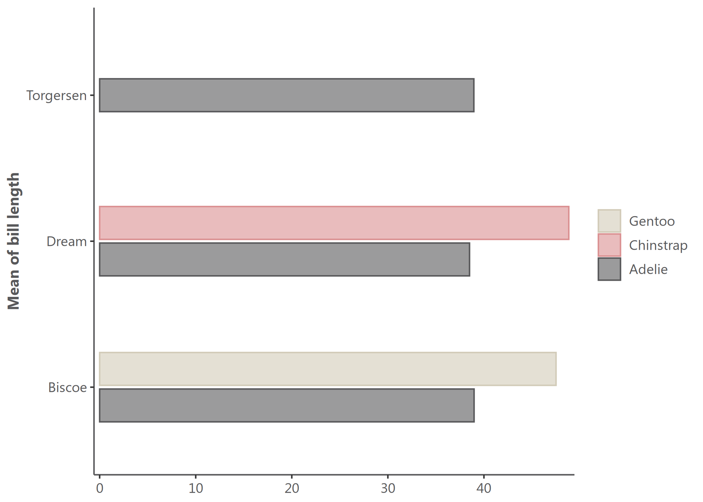
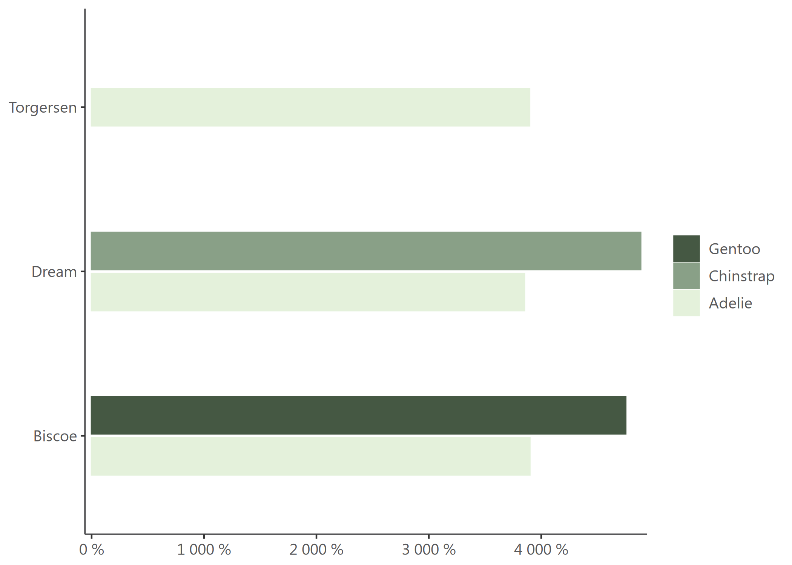
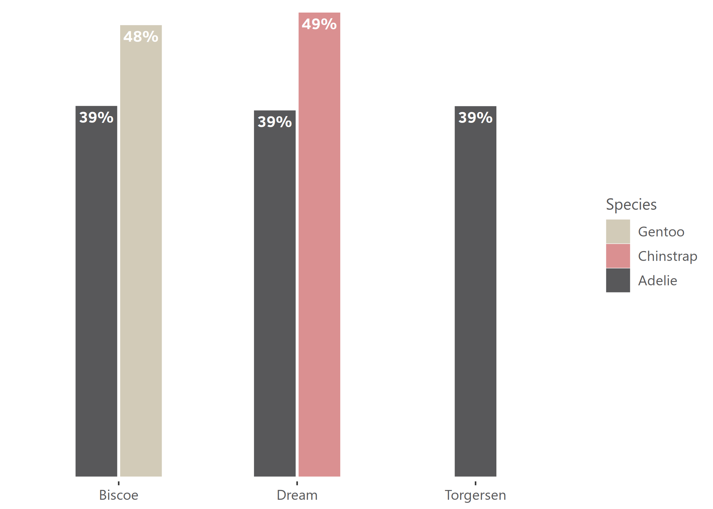
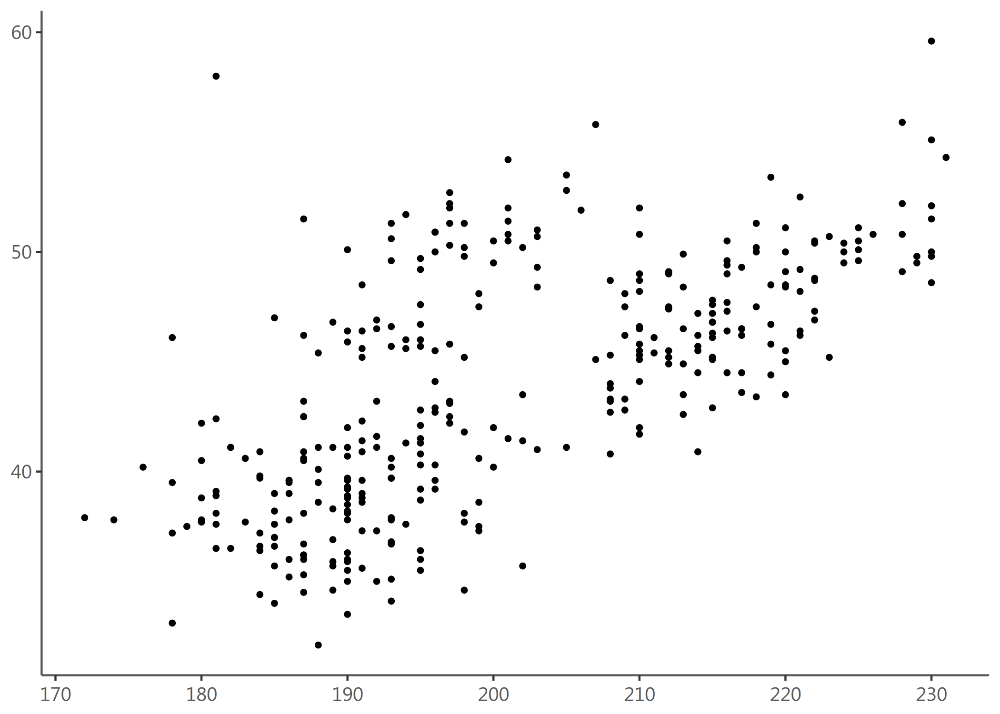
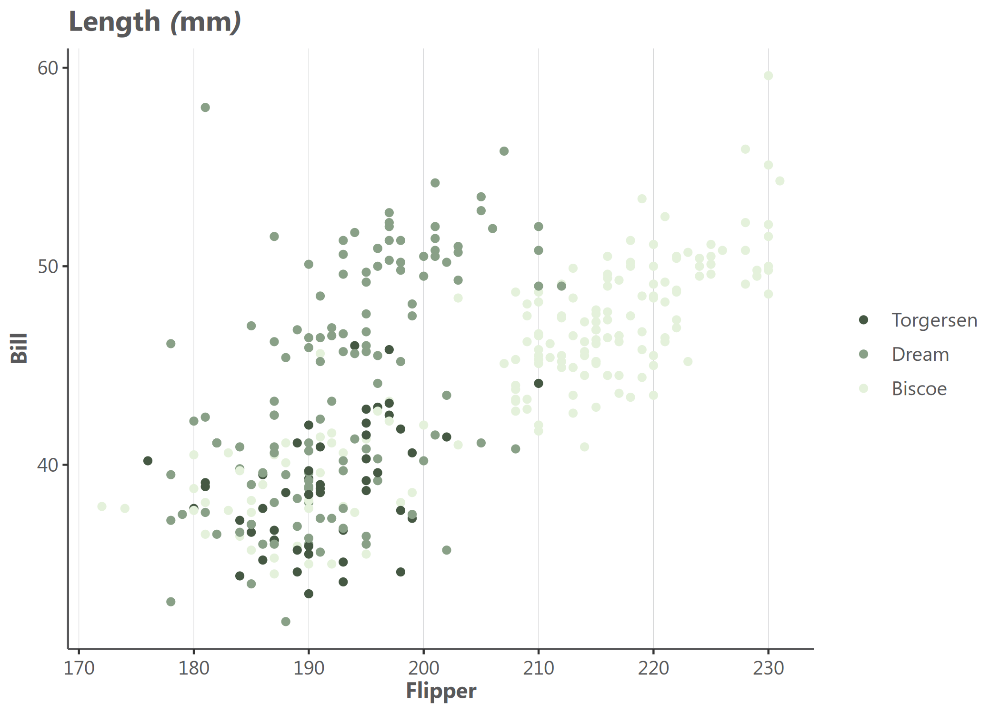

What a color! What a viz!
visualizeR proposes some utils to get REACH and AGORA colors, ready-to-go color palettes, and a few visualization functions (horizontal hist graph for instance).
Installation
You can install the last version of visualizeR from GitHub with:
# install.packages("devtools")
devtools::install_github("gnoblet/visualizeR", build_vignettes = TRUE)Roadmap
Roadmap is as follows:
- Add IMPACT’s colors
- Add all color palettes from the internal documentation
- There remains to be added more-than-7-color palettes and black color palettes
- Add new types of visualization (e.g. dumbbell plot)
- Use examples
- Add some ease-map functions
- Add some interactive functions (maps and graphs)
Request
Please, do not hesitate to pull request any new viz or colors or color palettes, or to email request any change (guillaume.noblet@reach-initiative.org or gnoblet@zaclys.net).
Colors
Color palettes for REACH, AGORA and IMPACT are available. Functions to access colors and palettes are cols_initiative() or pal_initiative(). For now, the initiative with the most colors and color palettes is REACH. Feel free to pull requests new AGORA and IMPACT colors.
library(visualizeR)
# Get all saved REACH colors, named
cols_reach(unnamed = F)[1:10]
#> white black main_grey main_red main_lt_grey main_beige
#> "#FFFFFF" "#000000" "#58585A" "#EE5859" "#C7C8CA" "#D2CBB8"
#> iroise_1 iroise_2 iroise_3 iroise_4
#> "#DFECEF" "#B1D7E0" "#699DA3" "#236A7A"
# Extract a color palette as hexadecimal codes and reversed
pal_reach(palette = "main", reversed = TRUE, color_ramp_palette = FALSE)
#> [1] "#58585A" "#EE5859" "#C7C8CA" "#D2CBB8"
# Get all color palettes names
pal_reach(show_palettes = T)
#> [1] "main" "primary" "secondary" "two_dots"
#> [5] "two_dots_flashy" "red_main" "red_main_5" "red_alt"
#> [9] "red_alt_5" "iroise" "iroise_5" "discrete_6"
#> [13] "red_2" "red_3" "red_4" "red_5"
#> [17] "red_6" "red_7" "green_2" "green_3"
#> [21] "green_4" "green_5" "green_6" "green_7"
#> [25] "artichoke_2" "artichoke_3" "artichoke_4" "artichoke_5"
#> [29] "artichoke_6" "artichoke_7" "blue_2" "blue_3"
#> [33] "blue_4" "blue_5" "blue_6" "blue_7"Charts
Example 1: Bar chart, already REACH themed
library(visualizeR)
library(palmerpenguins)
library(dplyr)
df <- penguins |>
group_by(island, species) |>
summarize(
mean_bl = mean(bill_length_mm, na.rm = T),
mean_fl = mean(flipper_length_mm, na.rm = T)) |>
ungroup()
# Simple bar chart by group with some alpha transparency
bar(df, island, mean_bl, species, percent = FALSE, alpha = 0.6, x_title = "Mean of bill length")
# Using another color palette through `theme_reach()` and changing scale to percent
bar(df, island,mean_bl, species, percent = TRUE, theme = theme_reach(palette = "artichoke_3"))
# Not flipped, with text added, group_title, no y-axis and no bold for legend
bar(df, island, mean_bl, species, group_title = "Species", flip = FALSE, add_text = TRUE, add_text_suffix = "%", percent = FALSE, theme = theme_reach(text_font_face = "plain", axis_y = FALSE))
Example 2: Point chart, already REACH themed
At this stage, point_reach() only supports categorical grouping colors with the group arg.
# Simple point chart
point(penguins, bill_length_mm, flipper_length_mm)
# Point chart with grouping colors, greater dot size, some transparency, reversed color palette
point(penguins, bill_length_mm, flipper_length_mm, island, alpha = 0.6, size = 3, theme = theme_reach(reverse = TRUE))
# Using another color palettes
point(penguins, bill_length_mm, flipper_length_mm, island, size = 1.5, x_title = "Bill", y_title = "Flipper", title = "Length (mm)", theme = theme_reach(palette = "artichoke_3", text_font_face = , grid_x = T))
Maps
# Add indicator layer
# - based on "pretty" classes and title "Proportion (%)"
# - buffer to add a 10% around the bounding box
map <- add_indicator_layer(
indicator_admin1,
opn_dfc,
buffer = 0.1) +
# Layout - some defaults - add the map title
add_layout("% of HH that reported open defecation as sanitation facility") +
# Admin boundaries as list of shape files (lines) and colors, line widths and labels as vectors
add_admin_boundaries(
lines = list(line_admin1, border_admin0, frontier_admin0),
colors = cols_reach("main_lt_grey", "dk_grey", "black"),
lwds = c(0.5, 2, 3),
labels = c("Department", "Country", "Dominican Rep. frontier"),
title = "Administrative boundaries") +
# Add text labels - centered on admin 1 centroids
add_admin_labels(centroid_admin1, ADM1_FR_UPPER) +
# Add a compass
add_compass() +
# Add a scale bar
add_scale_bar() +
# Add credits
add_credits("Admin. boundaries. : CNIGS \nCoord. system: GCS WGS 1984")
Once exported with tmap::tmap_save().